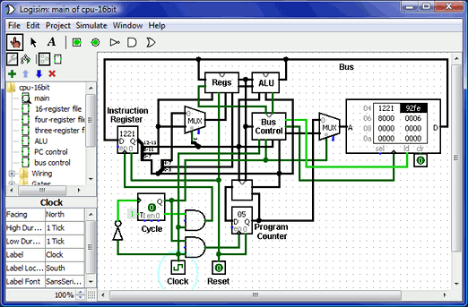

The Logisim-evolution user's Guide

Logisim-evolution is an educational tool for designing and simulating digital logic circuits. With its simple toolbar interface and simulation of circuits as they are built, it is simple enough to facilitate learning the most basic concepts related to logic circuits. With the capacity to build larger circuits from smaller subcircuits, and to draw bundles of wires with a single mouse drag, Logisim can be used (and is used) to design and simulate entire CPUs for educational purposes.
Students at colleges and universities around the world use Logisim for a variety of purposes, including:
- A module in general-education computer science surveys
- A unit in sophomore-level computer organization courses
- Over a full semester in upper-division computer architecture courses
The Guide to Being a Logisim User, which you are reading now, is the official reference for Logisim's features. Its first part is a sequence of sections introducing the major parts of Logisim. These sections are written so that they can be read "cover to cover" to learn about all of the most important features of Logisim.
Beginner's tutorial
Graphic interface
Hierarchical design
Additional features
Combinational analysis
The remaining sections are a motley bunch of reference materials and explanations of some of the lesser corners of Logisim.
Memory components
Value propagation
Chronogram and logging
Command-line verification and test vectors
Menu reference
Application preferences
Project options
HDL IP
JAR libraries
About the program